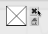

Display Options
Curve and Points
To display or hide the points of a curve, click on or outside it.

The To display points only, unselect this option. |  |

To display a grid in the editor, select the grid option.
The grid's step is adapted automatically to the window size and to the axis scale.
Press p to show or hide the indexes of the points. The indexes are not ordered "chronologically", but follow the abscissa axis order.
BPC editors have an additional option : the Closed BPC option.
This option allows to connect the first and last point of the curve, in order to get a polyhedron.

View
To browse the editor's surface :
|
To change the editor's scale, click and drag the abscissa or ordinates axis.
The adjustment limits of the abscissa ruler depends on the value of the "decimals" input.

To zoom in a region of a curve :
select the zoom tool
 ,
,click and drag a region.
To fit the editor's scale to the object size, click on the rezise tool  .
.
Background Picture
A picture can be associated with the BPF or BPC editors and displayed as background. To select a background picture :
Ctrl/ right click and and selectBackground Picturein the contextual menuClick on the picyre icon
Select a picture via the dialogue window

 | To delete the picture, click on the small cross icon.
|
Spline Display
Spline are mathematical functions defined piecewise by polynomial interpolation. They are used for generating smoothed interpolated shapes , starting from a set of control points. Some functions in OM allow to generate spline curves starting from the points of a BPF or BPC.
To display the preview of a spline curve computed from the BPF/BPC, check the spline display option.
- The spline's resolution represents the number of points in the spline preview.
- The spline's degree determines the number of adjacent control points used for computing the spline curve points. Higher values produce smoother curves.
To modify the spline resolution or degree :
click on the "Degree" or " Resolution" frames
scroll the mouse up or down to change the value.